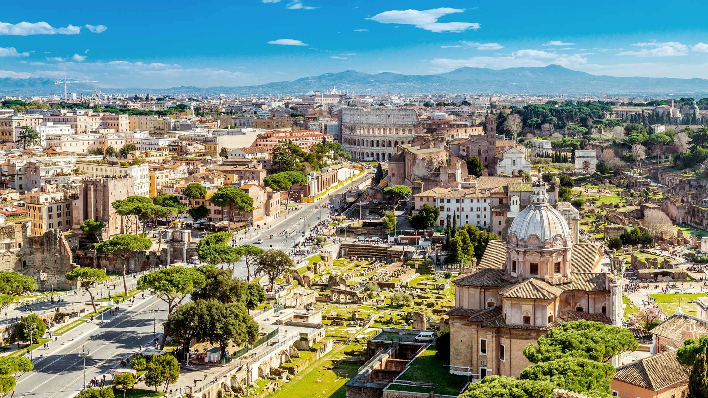

R.O.M.E.
Рим зустрів мене теплим сонцем, ароматом свіжоспечених круасанів і мелодією італійської мови, що лунала звідусіль. Це місто, де історія оживає на кожному кроці, і кожна вуличка здається частиною великої легенди. Я розпочав свою подорож із Колізею – величної арени, що досі зберігає в собі відлуння гладіаторських боїв.

Поруч розкинувся Римський форум, руїни якого нагадували про могутність давньої імперії. Я повільно крокував між мармуровими колонами, уявляючи, як тут колись збиралися римські сенатори та промовляли полководці. Далі шлях привів мене до Пантеону, що вражав своєю досконалою архітектурою, а його масивний купол здавався чимось нереальним. Вийшовши на площу Навона, я побачив, як художники створюють свої картини, вуличні музиканти грають романтичні мелодії, а вуличні кафе заповнені людьми, які неквапливо смакують італійське вино.

А в Гайд-парку відчув спокій серед метушливого міста, спостерігаючи, як лондонці годують білок і неквапливо прогулюються алеями. Відвідавши Британський музей, я загубився у світі стародавніх артефактів, затримавшись біля знаменитого Розеттського каменя.
Коли я опинився біля фонтану Треві, натовп туристів, що загадували бажання, нагадував про давню традицію: я теж кинув монету у воду, вірячи, що повернуся сюди знову. У Ватикані я вражено споглядав собор Святого Петра – його розміри, величність і багатство деталей змушували затамувати подих.
Я піднявся на купол і побачив неймовірну панораму міста – червоні дахи будинків, вузькі вулички та давні пам’ятки розкинулися переді мною, неначе на картині. Прогулюючись Трастевере, я відчув справжній дух Риму: у маленьких ресторанах пахло пастою карбонара та піцою, місцеві жителі гучно розмовляли за столиками, а між столиками пробігали офіціанти з тарілками свіжої моцарели та бокалами вина.
Ця поїздка залишила неймовірні враження. Рим — це місто вражень!